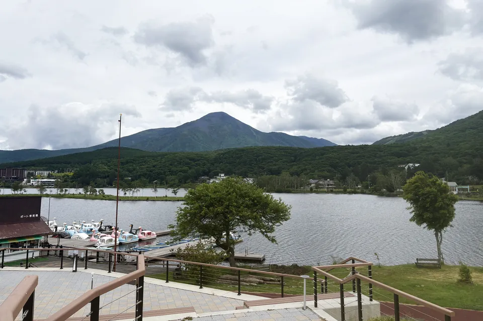
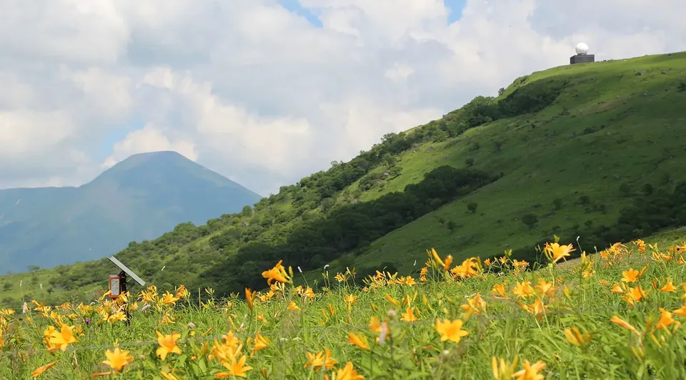

Nearby Guide
周 辺 施 設 ガ イ ド （ 一 次 情 報 ）
以下は各施設の公式情報を確認して掲載しています（確認日：2026年9月12日）。所要時間は目安です。営業日時・料金・団体対応・大型バス駐車は変更される場合があるため、最新情報・ご予約は各施設の公式サイト／お電話で直接ご確認ください（当ホテルからの予約・送迎ではありません）。写真は、各施設から使用の承諾を得たもの、山幸閣の提供写真、またはクリエイティブ・コモンズ（CC BY 4.0）のものです。

車山高原 SKYPARK RESORT
2本の展望リフトで標高1,925mの車山山頂へ。山頂からは霧ヶ峰・八島ヶ原へと続くトレッキングフィールドが広がり、夏は高山植物が楽しめます。
- ホテルから
- お車で約5分（山幸閣の案内による目安）
- 大型バス
- 可（15名以上の団体割引あり。バス駐車台数を含め事前連絡が必要）
- 対象・季節
- 全年齢／グリーンシーズン 2026年4月24日〜11月3日ほか（冬はスキー場）
- 公式情報
- 車山高原SKYPARK 公式 ↗

白樺湖 レイクサイドパーク（白樺リゾート）
白樺湖畔で、SUP・アクアサイクル・手漕ぎボートなどの湖上アクティビティを楽しめるエリアです。
- ホテルから
- 白樺湖畔（お車で約数分・目安）
- 大型バス
- 白樺リゾートの駐車場を利用（団体・台数は要確認）
- 対象・季節
- 手漕ぎボートは年齢制限なし（定員3名）／2026年4月18日〜11月23日 9:30〜16:00
文化施設・雨天可
世界の影絵・きり絵・ガラス・オルゴール美術館（白樺リゾート）
影絵作家・藤城清治の作品をはじめ、きり絵・ガラス・オルゴールを展示する室内施設。雨天時のプログラムにも向いています。
- ホテルから
- 西白樺湖バス停 徒歩圏／お車で約数分（目安）
- 大型バス
- 駐車場あり（台数は要確認）
- 対象・季節
- 3歳から／通年（時期により開館時間が変動・12月上旬にメンテナンス休館）／15名以上の団体割引あり
- 公式情報
- 白樺リゾート 美術館 公式 ↗

八島ヶ原湿原／八島ビジターセンター あざみ館
高層湿原で高山植物や池塘（ちとう）を観察できるフィールド。木道の一周は約90分、短いコースは約20分〜。入館無料のビジターセンターがあります。
- ホテルから
- お車で約20〜30分（目安・ビーナスライン経由）
- 大型バス
- 混雑時は大型バスが別駐車場へ回送となる場合あり（乗降はセンター前で可）要事前確認
- 対象・季節
- 全年齢（散策）／ビジターセンター 4月下旬〜11月上旬 9:30〜16:30
- 公式情報
- 八島ビジターセンター 公式 ↗